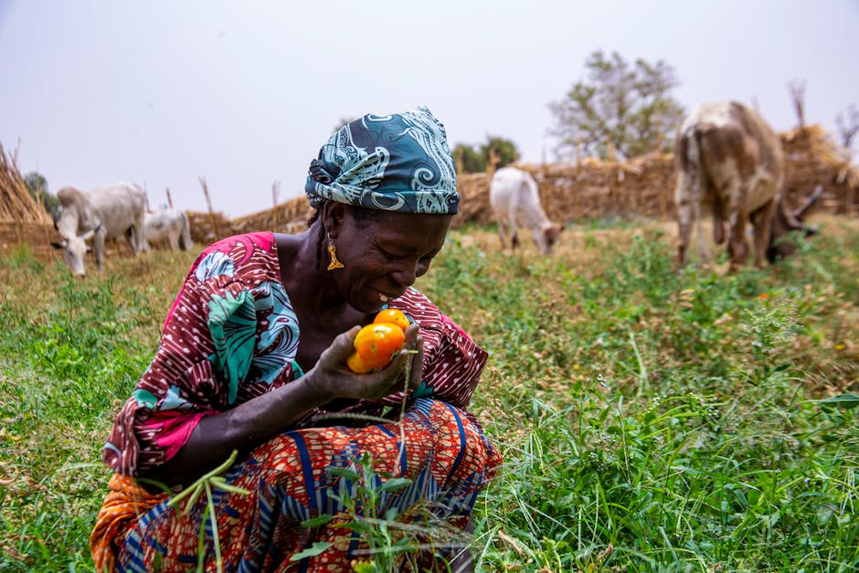

Empowering Women across India with audio messages in their native languages on Health, Sustainable Agriculture and Education

Empowering Women Across India with Voice-based Knowledge in Their Native Languages: By using openly accessible text-to-speech models from the Indian Institute of Science (IISc) and MeitY's Digital India Bhashini Division, Audiopedia created health-related 400+ audio messages that can be shared with civil society organizations for awareness raising and capacity building
Data characteristics
Audiopedia has created useful content on various topics including health, education, financial literacy. This data is available in text and audio format in multiple languages incl. low-resource languages.
Model characteristics
For the generation of audio messages, Audiopedia used openly accessible text-to-speech models from the Indian Institute of Science (IISc) and MeitY's Digital India Bhashini Division.
How to use
Civil society organizations can use the existing voice content to generate tailored, AI-powered messages in various Indian languages across different topics including health, education, agriculture and other social topics. Civil society organizations can deploy these messages in rural and semi-urban areas using easy-to-use digital tools incl. WhatsApp messaging or feature phones.
Datasets
Use cases
About
Powered by / Provided by: Audiopedia
Catalyzed by: FAIR Forward - AI for All (https://www.bmz-digital.global/en/overview-of-initiatives/fair-forward/), GIZ
Financed by: BMZ (https://www.bmz-digital.global/en/digital-transformation-and-development-cooperation/)
Authors: Philipp Olbrich
Contact: Audiopedia Foundation (https://www.audiopedia.foundation/), Marcel Heyne (contact@audiopedia.org)